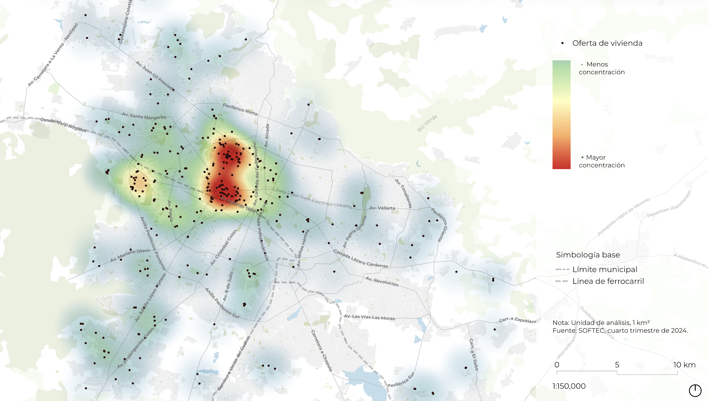
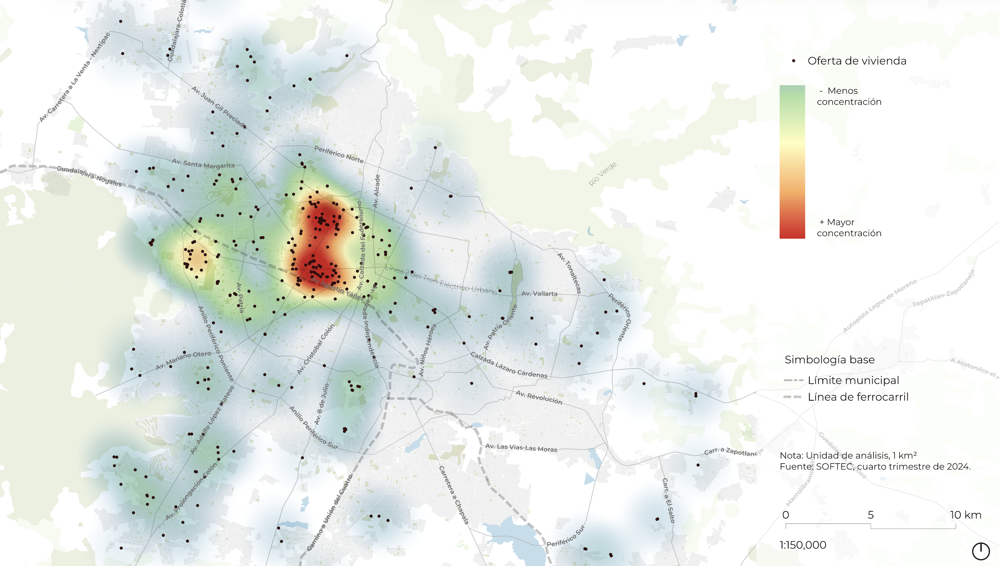
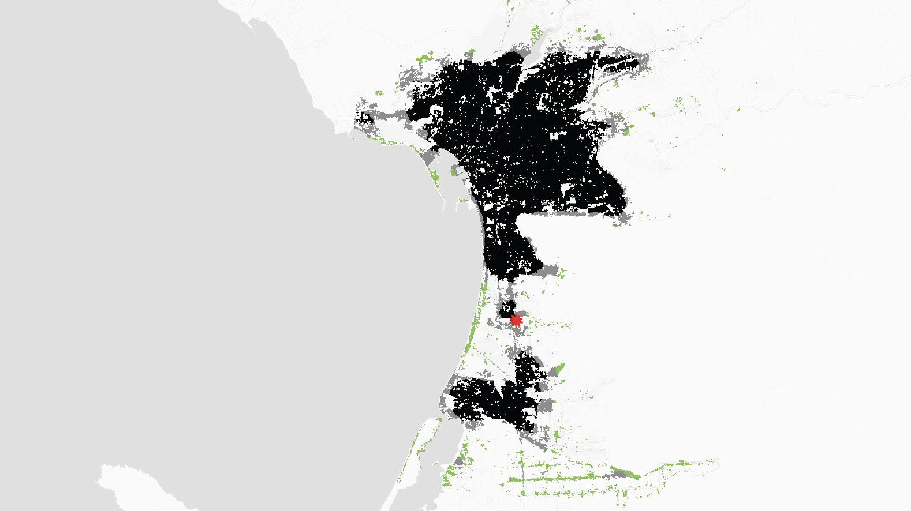
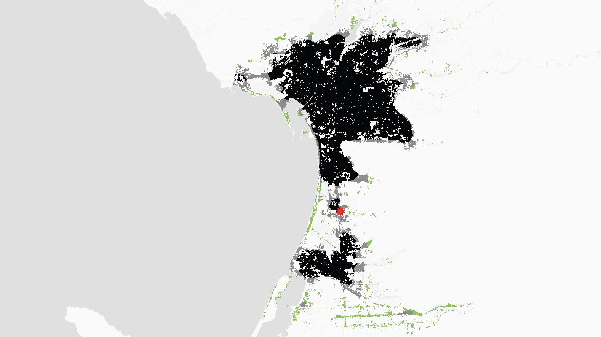

 

Proyectos
Conectando con el servidor...
Servicios
Inteligencia territorial
Análisis geoespacial avanzado para la toma de decisiones territoriales.
- Modelos de expansión urbana.
- Generación de mapas y portales cartográficos.
- Infraestructura de Datos (IDE).
Ciencia de Datos Geoespaciales
Automatización y procesamiento de grandes volúmenes de datos geoespaciales.
- Normalización de datos.
- ETL de datos geográficos.
- Dashboards interactivos.
Planeación Territorial
Consultoría técnica para planes de desarrollo y ordenamiento.
- Análisis de plusvalía.
- Indicadores urbanos.
- Diagnósticos de infraestructura.
Curriculum Vitae
Contact & Skills
Email: urbanistalepe@gmail.com
Links:
GitHub /
LinkedIn
Technical Tools
QGIS PostGIS Python GeoPandas
R GeoServer Git
Education
Maestría en Ciencia de la ciudad
Bachelor’s in Urbanism & Environment
Premios
Publicaciones
Ruta profesional
Investigación / Laboratorio de Ciencia de Ciudades
- Desarrollo de Cityscope https://www.media.mit.edu/projects/cityscope-guadalajara/overview/.
- Modelos de expansión urbana.
- Simulaciones y diseño de políticas públicas.
Proyectista y analista de proyectos urbanos
- Análisis de viabilidad técnica y financiera de proyectos inmobiliarios.
- Elaboración de estudios de mercado y análisis de plusvalía.
- Diagnósticos de infraestructura y servicios en equipamientos universitarios.
Responsable de normalización de datos
- Normalización de datos y tableros estadísticos.
- Reportes, indicadores y cartografía.
- Cédulas de información de prospección, excavación y registro de monumentos.
Líder GIS en Planeación Metropolitana
- Indicadores urbanos, análisis territorial y tableros.
- Infraestructura de datos espaciales (PostGIS/GeoServer).
Contacto
¿Tienes un proyecto en mente o alguna consulta sobre analítica urbana? Conversemos.
Email: urbanistalepe@gmail.com